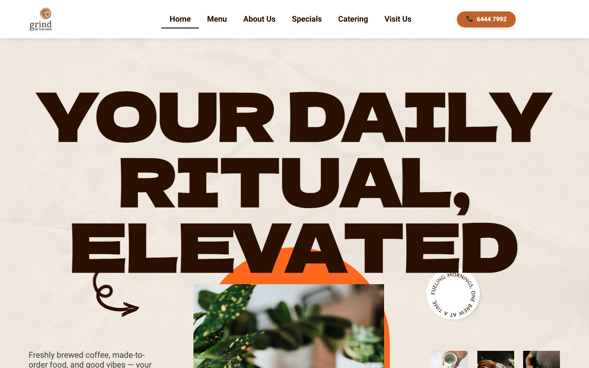
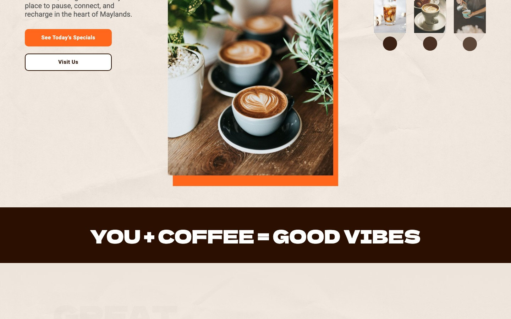
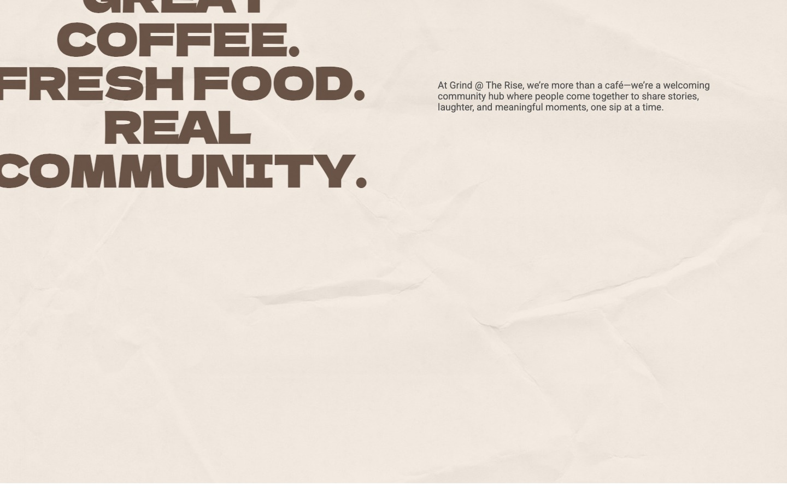
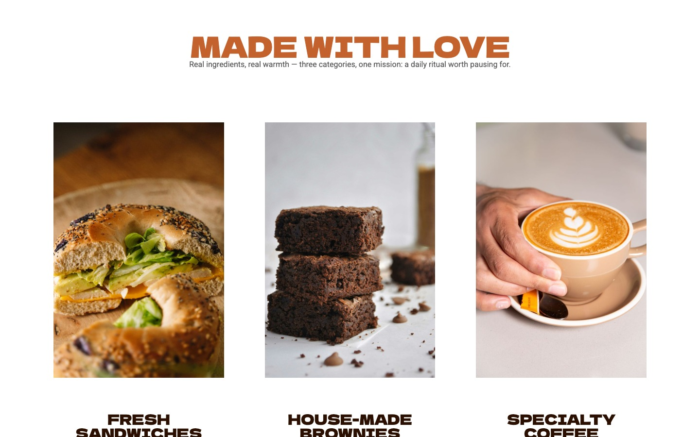

Grind @ The Rise is a specialty café with a bold physical brand but no web presence. I built their site on WordPress with Elementor Pro — translating an in-store identity into a fast, fully responsive site the owners can run themselves.
My focus as the developer: a maintainable page structure, a content model the team can update without me, and a performance setup that keeps a heavily image-driven site loading fast.
The brief looked like design, but the hard parts were engineering: a food/drinks site lives or dies on image weight, so I had to deliver rich full-bleed photography and fast load times. The owners also needed to post seasonal specials themselves — which meant building editable structures, not hardcoded layouts.
And it all had to hold up on mobile, where most café customers actually search.
The real deliverable wasn't a pretty page — it was a system the café can run without me: editable content, consistent templates, and a performance budget that survives new photos.

Translated a bold café brand into a high-impact Elementor build — oversized display type, paper-texture palette, and full-bleed photography — proving design-to-code fidelity on a tight brand brief.

Structured the menu and specials sections so non-technical staff update seasonal items themselves — engineering editorial independence into the build instead of recurring dev requests.

Configured SiteGround CDN and caching for fast load times across devices — performance engineering that keeps a media-heavy, photo-rich site responsive.